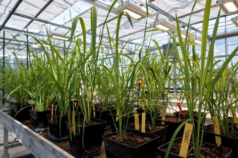

<!DOCTYPE C.png>
<C.png>

  <head>
    <meta charset="utf-8">
    <meta name="viewport" content="width=device-width">
    <title>page d'accueil</title>
    <link href='https://unpkg.com/boxicons@2.1.4/css/boxicons.min.css' rel='stylesheet'>'
    <link href="style.css" rel="stylesheet" type="text/css" />

<body>
  <section class="header">
    <header class="header">
      <a href="#" class="logo">Portfolio</a>

      <i class='bx bx-menu' id="menu-icon"></i>

      <nav class="navbar">
        <a href="index.html" class="active">Accuielle</a>
      </nav>
    </header>
  </section>
    <section class="portfolio" id="portfolio">
      <h2 class="heading">Dernier<span>Projet!</span></h2>
        <p>Binvenue sur mon portfolio!</p>
        <p>si vous voulez plus de details sur mes projet concernant le <span>réseaux</span> veuillez passer votre souris sur les images.</p>
        <p>Voici 2 projet réaliser durant mon année de BUT 1 et en Terminal STI2D pour le grand projet.</p>
        <h3 class="heading">En <span>Réseaux!</span></h3>
        <div class="portfolio-container">
            <div class="portfolio-box">
            
              <div class="portfolio-layer">
                <h4>Analyse de mon reseaux local</h4>
                <p>Voici le Rapport d un exercie d analyse de notre réseaux privée en Autonomie</p>
                <p>Cette exercie m'as permis dans connaitre plus sur le finctionnement de mon partage de connexion et l existance des AS</p>
                <a href="SAE12compte rendue complet luderic brosse.pdf" target="_blank"><i class='bx bx-link-external'></i> </a>
              </div>
            </div>
              <div class="portfolio-box">
              
                <div class="portfolio-layer">
                  <h4>Mise sous video surveillance d une vanillerai</h4>
                  <p>Ceci est le grand projet de Terminal STI2D qui consiste a augenter la sécuriter dans les serres de vanilles dans les vallée polynesienne plus éthyque</p>
                  <p>Cette exercie m'as permis de m'occuper d un gros projet avec des contrainte métérologique éléctrique et de couverture réseaux et ceux dans un délais de 72H</p>
                </div>
              </div>
        </div>
      </section>
    <script src="script.js"></script>

    <footer class="footer">
      <div class="footer-text">
        <p>Copyright &copy; 2024 par Luderic BROSSE</p>
      </div>
      <div class="footer-inconTop">
        <a href="#home"><i class='bx bx-up-arrow-alt'></i></a>
      </div>
    </footer>
</body>
</html>